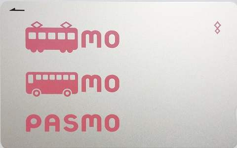
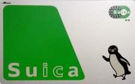

Where and how can I buy a SUICA/PASMO?
You can buy a PASMO/SUICA at train stations, from a ticket vending machine or at a ticket window. Then you can 'charge' (top up) them at any time, using a ticket vending machine again. As far as I've seen, every ticket vending machines in Metropolitan Tokyo seems to have an 'English' button on screen. A child's SUICA/PASMO can be bought at a ticket window by showing an ID to proof the age.What is the difference between SUICA and PASMO?
SUICA and PASMO have no differences in functionality. But you can return your card and get the deposit back only from the company that issues the type of your SUICA/PASMO. SUICA is issued by JR East company, and PASMO is issued by a joint company established by other public transport operators. You can use them interchangeably, so choosing a SUICA or PASMO is just a matter of preference.Is there SUICA/PASMO for children?
Yes. You can buy a named SUICA/PASMO for a child from a train station staff, by showing the ID of the child. Only the child named on the card will be authorized to use it.What is the price of SUICA/PASMO?
You can buy a SUICA/PASMO for 1,000 / 2,000 / 3,000 / 5,000 yen. Each price includes 500 yen deposit. For example, a 2,000 yen card comes with 500 yen deposit and 1,500 yen credit for use. You can top up (=charge) your card later at any time, using a ticket vending machine at a train station. With ticket machines at JR train stations, you can top up by 500 yen, 1,000 yen, and so on. At Keikyu or Keisei train stations, you can top up by multiples of 10 yen.How do I charge (= top up) my SUICA/PASMO?
You can charge your card using ticket machines at train or subway stations.With JR East ticket machines, the minimum amount of charge is 500 yen. With Keisei or Keikyu ticket machines, the minimum amount of charge is 10 yen. You can charge up to 20,000 yen for a card.
Can I return my SUICA/PASMO and get a refund?
Yes. You can get a full refund for PASMO. For SUICA, they may take some fee. You can return them and get the deposit back only from the company that sells the type of your SUICA/PASMO.When you return your PASMO, you get your deposit and all remaining amount back. No fee.
When you return your SUICA, you get your deposit, but 220 yen fee is deducted from the remaining amount. If the remaining amount is 220 yen or less, you get only your deposit (500 yen) back.
What is the difference between named and unnamed SUICA/PASMO?
If you are a traveler above 12 years old, you can simply buy an unnamed SUICA/PASMO, and will not need a named SUICA/PASMO. But if you are curious, here is more detail:A named SUICA/PASMO requires your name, birth date and phone number information when you buy it. When you have lost a named SUICA, you can apply for the reissuance of your card for a fee of 1,080 yen by showing your ID. A named SUICA/PASMO cannot be used by another person. A named SUICA/PASMO can also be a commuter pass. (In other words, an IC card commuter pass must be a named SUICA/PASMO.) A SUICA/PASMO for a child (roughly spaking, age 6-12) must be a named SUICA because of age validation.